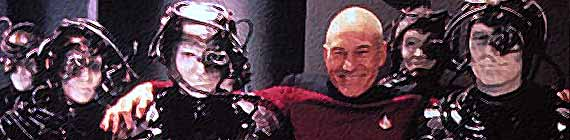
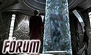

| Estimulando
a unio entre pblico e site Veja os servios que o TB est conduzindo para transformar seu pblico numa comunidade de fs de Jornada integrada pela net
|
|
| Um servio para que voc possa entrar em contato direto com
o TB. Oferea sugestes e crticas sobre o site, chame nossa ateno quanto a possveis erros, lembre-nos
de notcias que porventura deixamos escapar, alerte-nos sobre qualquer
citao de
Jornada na mdia, avise-nos sobre eventos nacionais de
Jornada, d dicas de novos sites. Estaremos postando
regularmente os resultados dessa interao atravs de nossa "linha quente". linhaquente@trekbrasilis.net. |
|
| Esse projeto uma ambiciosa tentativa de estimular nossos visitantes a produzir material para ser publicado no Trek Brasilis. Ao clicar aqui voc poder encontrar todas as instrues de que ir precisar para redigir contedo para o TB. Os segredos de redao e pesquisa, as fontes de informao e os bastidores de Jornada se abriro para voc. Produza textos de anlise ou de fico com base em mtodos de trabalho similares aos usados na indstria da TV. Uma experincia enriquecedora o espera. | |
| Publicada regularmente na capa do site, a Agenda tem por objetivo rastrear tudo que pode estar acontecendo ligado a Jornada nas Estrelas ao alcance do pblico. Os anncios da exibio de episdios e filmes na TV e da realizao de reunies e convenes sero a tnica deste que se prope a ser o calendrio definitivo do f. Precisamos da sua ajuda para no deixar passar em branco nada na mdia a respeito de Jornada ou nenhum evento sobre a marca, no mundo real ou virtual. | |
| Na capa do TB, possvel cadastrar seu e-mail para receber a newsletter do site. Por meio dela, estaremos informando tudo que anda rolando por aqui e no mundo de Jornada nas Estrelas, alm de informaes inditas, que no sero publicadas em nenhum outro lugar. Vale realmente a pena ter seu e-mail cadastrado na maior lista de trekkers em existncia no pas. Aguarde promoes e material exclusivo, no maior e melhor servio de informao por e-mail ligado franquia no Brasil. | |
| Outro destaque da capa a nossa enquete. No deixe de participar da nossa pesquisa quinzenal, respondendo a perguntas relativas a Jornada ou a temas de interesse do pblico do TB. Basta selecionar a sua opo pessoal e pressionar o boto "Votar" (agora o resultado atual da pesquisa ser exibido na prpria capa, sem a necessidade de se ir a uma outra pgina). Aps o fechamento de uma pesquisa quinzenal, os resultados so discutidos e postados como notcia na capa do TB. | |
 |
J tradicional no Trek Brasilis, o Frum agora est mais moderno e mais rpido. Participe de debates empolgantes e junte-se a uma comunidade on-line formada por pessoas de todos os cantos do Brasil. Pessoas inteligentes, educadas e que adoram Jornada nas Estrelas -- exatamente como voc. Voc tambm poder conferir diretamente os tpicos mais quentes de discusso na capa do TB, uma iniciativa para facilitar a integrao entre o site e o Frum. |
| Alm do Frum, agora o Trek Brasilis tambm possui sua prpria sala de bate-papo. Com ela, possvel interagir em tempo real com outros visitantes e trocar idias de forma muito mais dinmica. Aguarde tambm eventos especiais realizados virtualmente pelo site graas s possibilidades proporcionadas por esse novo recurso. Os fs tm por costume se reunir para conferir os episdios ao vivo pela net. No perca a oportunidade de trocar impresses em tempo real! | |